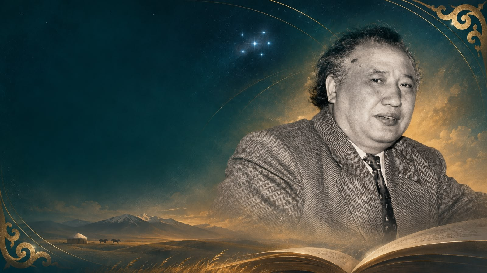
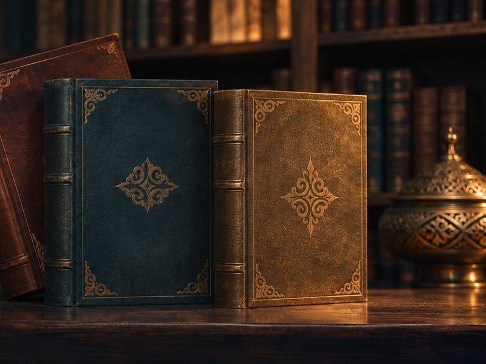
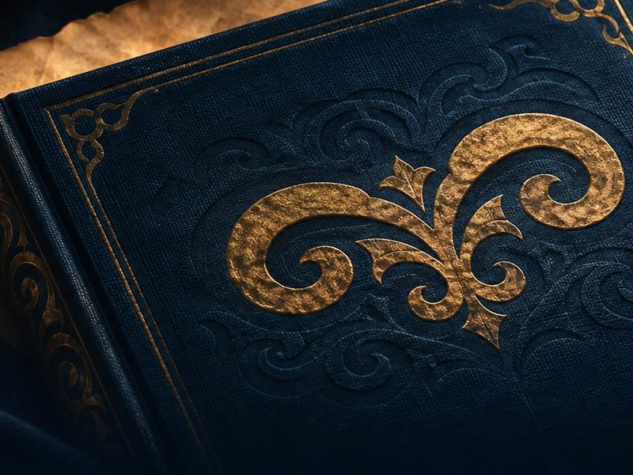
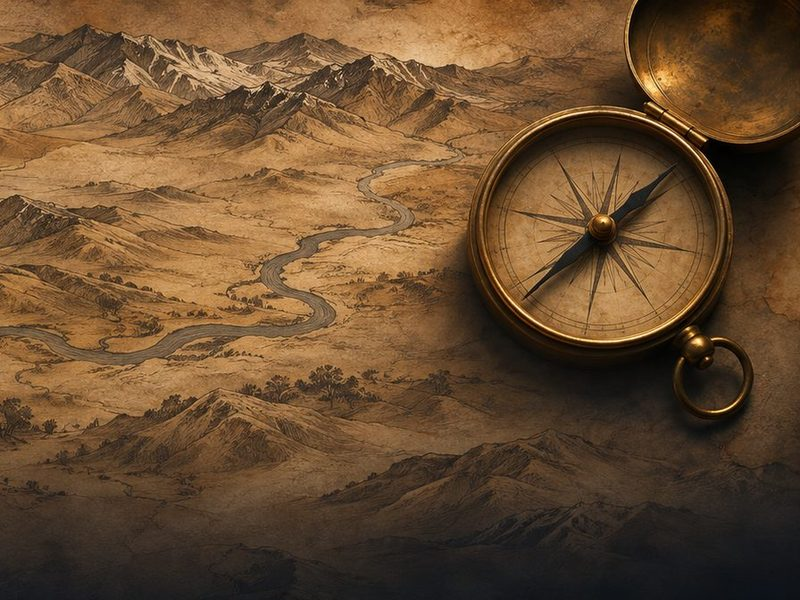
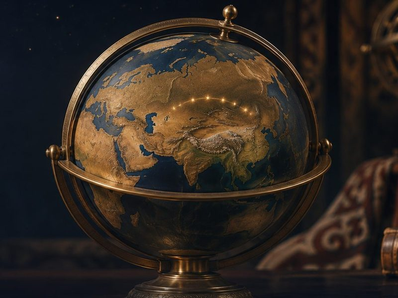
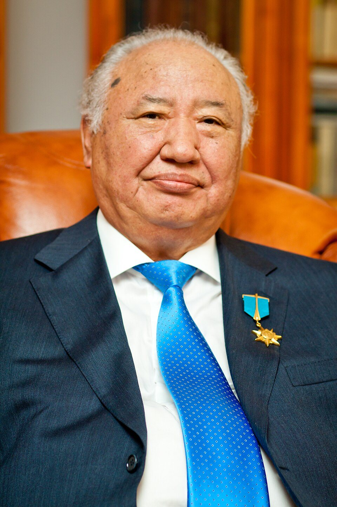
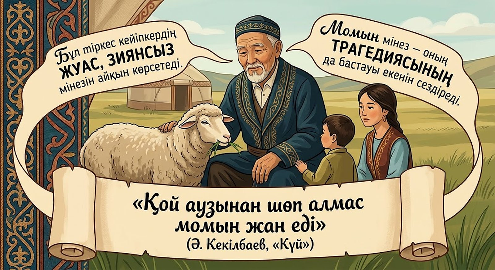

Қазақстанның халық жазушысы · 1939–2015
ӘбішКекілбаев
тарих пен аңыздың суреткері
Тарихтың тереңін, аңыздың сырын және ана тілінің құдіретін сөзбен мүсіндеген жазушының әлеміне саяхат: романдарды оқыңыз, тыңдаңыз, тілдік байлығын зерттеңіз.
Бөлімдер
Жазушы әлеміне саяхат
Әр бөлім — жеке әлем. Карточканы таңдаңыз.

КітаптарҮш тарихи роман→ АудиокітаптарШығармаларды тыңдау→ Деректі фильмЖазушы өмірі→ Түсіндірме сөздікШығармалардағы тіркестер→
Фразеологизмдер400-ге жуық тіркес→
Тарихи картаXVIII ғасыр→
3D глобус8 аялдама→ Тарихи детективТөрт жұмбақ→ ТестБілімді тексеру→3D сөре
Трилогия әлемі
Кітаптарды айналдырыңыз: тышқанмен немесе саусақпен сүйреңіз, алдыңғы кітапты басып оқыңыз.

Жазушы туралы
Ұлы даланың ойшыл суреткері
Әбіш Кекілбайұлы — Қазақстанның халық жазушысы, мемлекет және қоғам қайраткері. Тарих пен аңызды философиялық толғаныспен өрген романдары қазақ прозасының алтын қорына енді.
Маңғыстаудың Оңды ауылында туған жазушы туған жер, атамекен және тарих тақырыбын ұлттық тілдің бар байлығымен — мақал-мәтел мен тұрақты тіркестердің құдіретімен жеткізді.
- 19396 желтоқсанда Маңғыстаудағы Оңды ауылында туды
- 1962Қазақ мемлекеттік университетін бітірді
- 1981«Үркер» романы жарық көрді
- 1984«Елең-алаң» романы жарияланды
- 1992Қазақстанның халық жазушысы атанды
- 1996–2002Қазақстан Республикасының Мемлекеттік хатшысы
- 2009Қазақстанның Еңбек Ері
- 201511 желтоқсанда Астанада дүниеден өтті
«Өткенді білмей, келешекке жол жоқ»Ә. Кекілбаев, «Үркер»
Кітаптар
Тарихи романдар
Үш роман — үш дәуір. «Оқу» батырмасын бассаңыз, шығарма Қазақстанның ұлттық электрондық кітапханасында (kazneb.kz) ашылады.
Аудиокітаптар
Тыңдап оқимыз
«Тыңдау» батырмасын басыңыз — жазба осы беттің ішінде ойнатылады.
Деректі фильм
Жазушы туралы фильм
Әбіш Кекілбайұлының өмірі мен шығармашылығы туралы деректі туынды.
Түсіндірме сөздік
Шығармалардағы тіркестер
Кекілбаев шығармаларындағы тұрақты тіркестер мен мақал-мәтелдер. Іздеңіз немесе топты таңдаңыз. Барлық фразеологизмдерді іздеу үшін Фразеологиялық сөздікке өтіңіз.
Фразеологиялық сөздік
Тұрақты тіркесті іздеу
Тіркесті немесе оның мағынасын жазыңыз. Мысалы: «ит арқасы», «алыс жер», «қуанды». Қазақ әріптерінсіз жазсаңыз да табылады.
Талдау
Фразеологизмдердің мағыналық топтары
Кекілбаев тұрақты тіркестерді дайын қалпында ғана емес, контекске сай түрлендіріп, стильдік мақсатта қолданады.
Кейіпкер бейнесі
Мінезді ашатын тіркестер
Жазушы кейіпкерді «қатал» не «момын» деп тікелей сипаттамай-ақ, бір тұрақты тіркес арқылы оның болмысын ашады. Карточканы басып, талдауын оқыңыз.

«Күй» повесі
Өнер — рухани қару
Повестің басты идеясы — тұтқындықтағы адамның рухани азаттығы. Күйші жау қолына түссе де, домбырасынан шыққан үн жаудың мысын басады.
«Ол өзін қорлағандарға өшіккен жоқ, ол өзін қорлағандардың имансыздығына күйінді.»Ә. Кекілбаев, «Күй»
Мақал-мәтелдер
Халық даналығы — авторлық ойдың өзегі
Мақал-мәтелдер Кекілбаев прозасында құрғақ әшекей емес, шығарманың философиялық жүгін көтеретін тірек.
Идеялық мазмұнды жеткізудегі орны
Ұлттық дүниетанымның көрінісі
Тапсырма
Тіркесті мағынасымен сәйкестендір
Сол жақтан тіркесті, оң жақтан оның мағынасын таңдаңыз.
Тарихи карта
«Үркер» романының картасы
XVIII ғасырдың 30-жылдары. Аймақтар мен қалаларды басып, роман оқиғалары қай жерде өткенін біліңіз. Үзік сызық — Тевкелев елшілігінің Уфадан Ырғыздағы хан ордасына жолы (1731).
Картаны зертте
Түрлі түсті аймақты немесе қала белгісін басыңыз. Әр нүктеде — роман оқиғасы, тарихи дерек және ойлануға сұрақ.
Глобус
Роман ізімен: 8 аялдама
Глобусты айналдырыңыз немесе уақыт сызғышын жылжытыңыз — глобус сол жерге бұрылады.
Самарқанд
Тарихи детектив
Төрт тарихи іс
Әр папкада — бір тарихи жұмбақ. Айғақтарды оқып, дұрыс жауапты табыңыз. Шешілген істің айғақтары күнделікке түседі.
Айғақтар
Менің тергеуім
Тест
Білімді тексеру
Сегіз сұрақ: фразеологизмдер, мақал-мәтелдер және тарих. Әр жауаптан кейін түсіндірме шығады.